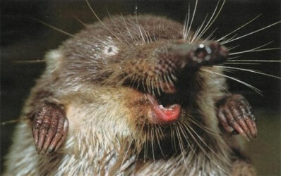

Это выхухоль, хохуля, – водяной зверек длиной 18—22 см. Носик хоботком, длинный хвост с роговыми
чешуйками и пахучие железы с маслянистым мускусом для пропитки меха и удержания в нем воздушных
пузырьков, что позволяет даже в воде зверьку быть практически сухим.

Дышит хохуля воздухом, но все ее тело приспособлено к жизни под водой - носовые отверстия
закрываются клапаном в носовой полости при нырянии. Передние лапки коротенькие, задние гораздо
больше и длиннее передних. Пальцы до когтей объединены плавательной перепонкой. Когти длинные,
приспособлены для рытья разветвленных норок. По краям лапок - кайма из жёстких волосков, что
увеличивает плавательную поверхность. Так как зверек подслеповат на его теле есть чувствительные
волоски и хорошо развито обоняние. Мех у выхухоли густой, бархатистый, очень прочный, волоски
меха к верху расширяются, а к корню сужаются. Окраска спины серовато- или тёмно-коричневая,
брюшка — серебристо-серая или серебристо-белая. Мех выхухоля очень ценный.
Почему на нашем логотипе выхухоль?
С применением современных технологий наша фирма вносит посильный вклад в сохранение и развитие
выхухоли путем очистки канализационных стоков до требований сброса в рыбохозяйственный водоем. Выхухоль
занесен в Красную книгу России и является биологическим индикатором здоровой и чистой воды. До 1988 году
в реке Хопер поголовье выхухоля насчитывало около 100 особей. Проведенные нашими специалистами работы по
оздоровлению реки Хопер в г.Урюпинске, Усть Бузулуке, Борисоглебске, Новохоперске, Балашове, Аркадаке,
позволили значительно повысить качество речной воды и тем самым увеличить поголовье зверьков до 50000.